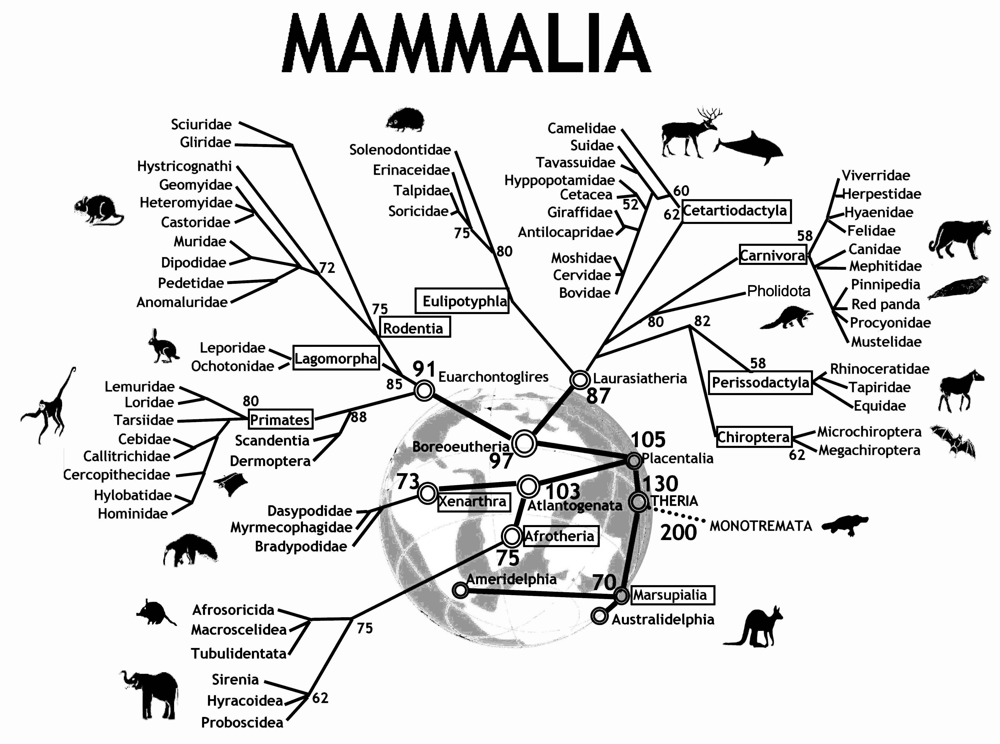
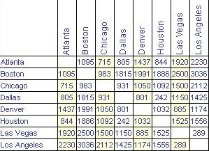
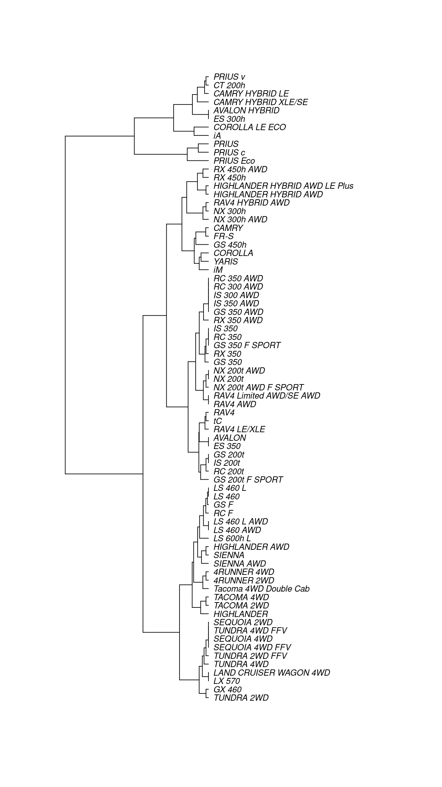
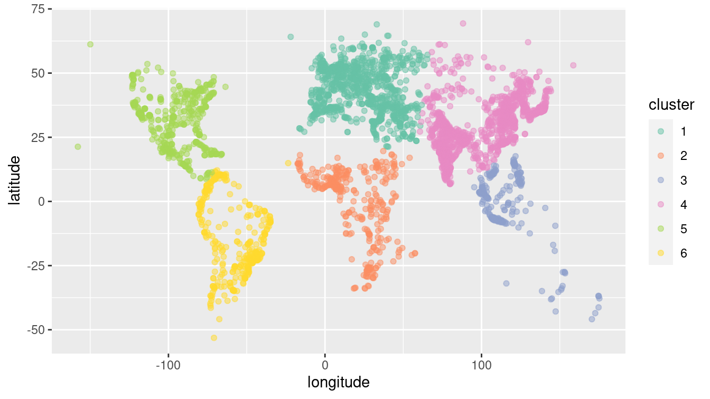
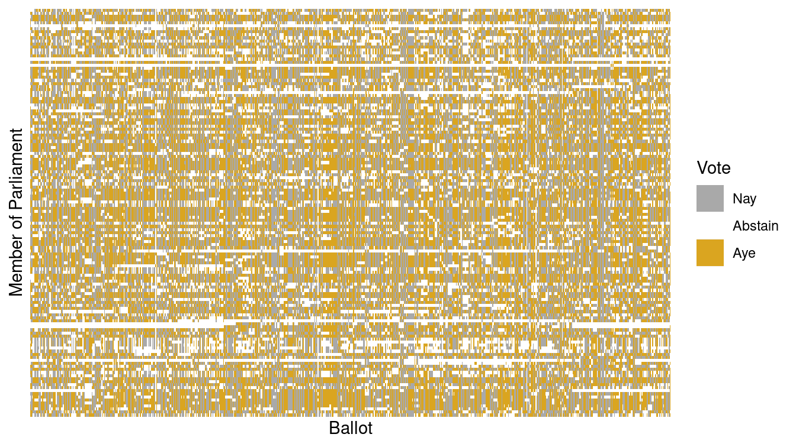
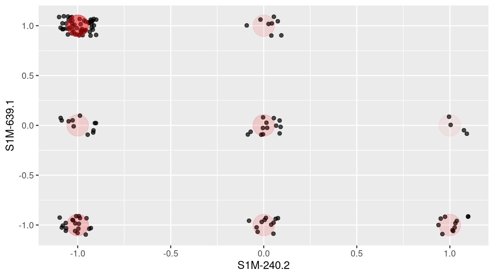
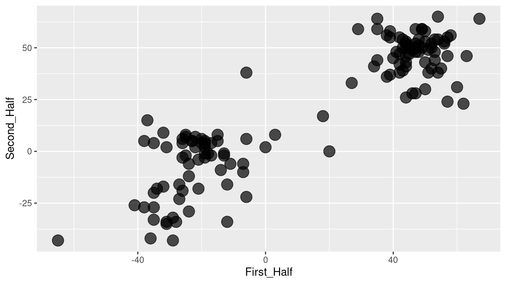
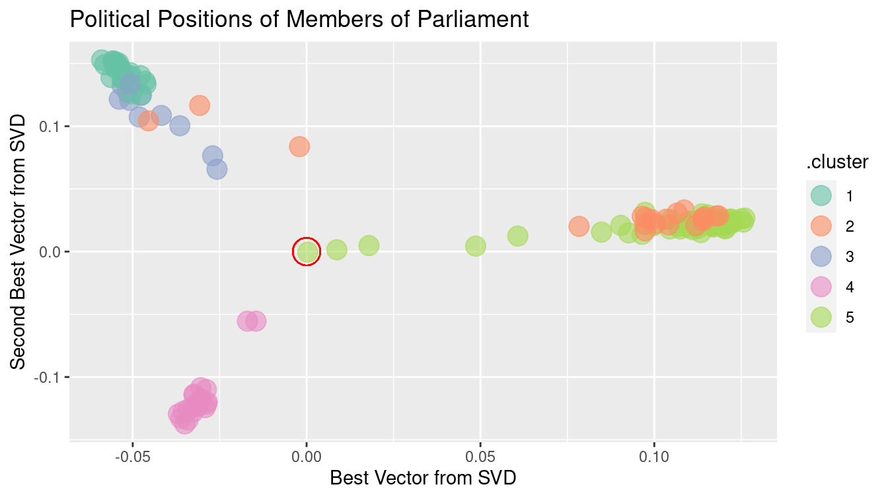
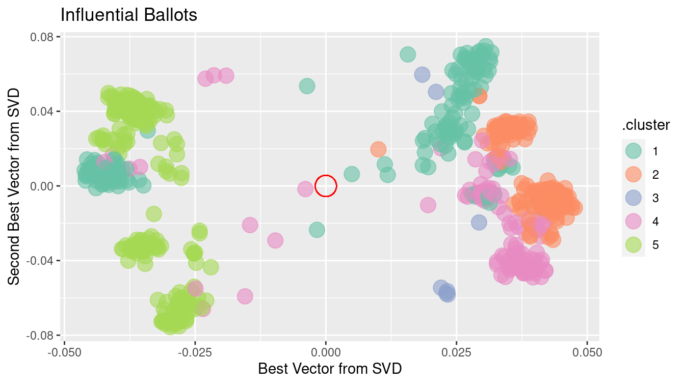
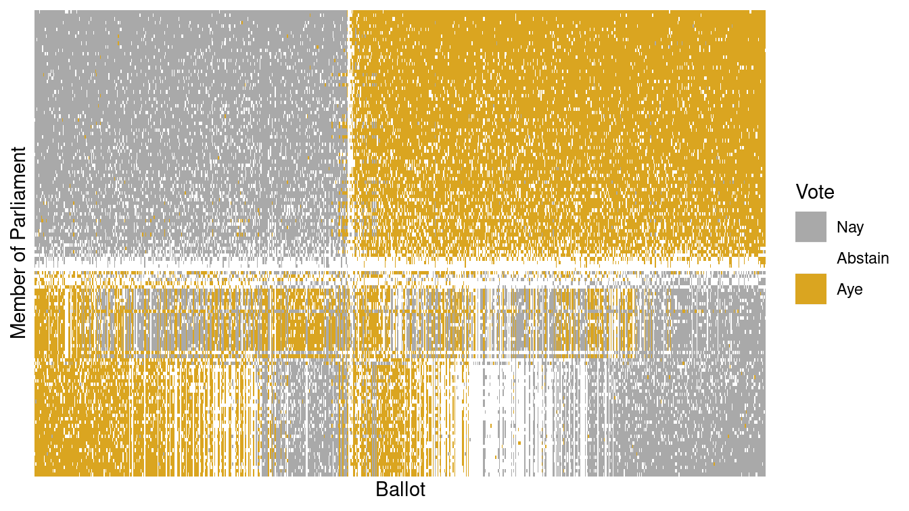

Chapter 12 Unsupervised learning
In the previous chapter, we explored models for learning about a response variable \(y\) from a set of explanatory variables \(\mathbf{X}\). This process is called supervised learning because the response variable provides not just a clear goal for the modeling (to improve predictions about future \(y\)’s), but also a guide (sometimes called the “ground truth”). In this chapter, we explore techniques in unsupervised learning, where there is no response variable \(y\). Here, we simply have a set of observations \(\mathbf{X}\), and we want to understand the relationships among them.
12.1 Clustering
Figure 12.1 shows an evolutionary tree of mammals. We humans (hominidae) are on the far left of the tree. The numbers at the branch points are estimates of how long ago—in millions of years—the branches separated. According to the diagram, rodents and primates diverged about 90 million years ago.

Figure 12.1: An evolutionary tree for mammals. Reprinted with permission under Creative Commons Attribution 2.0 Generic. No changes were made to this image. Source: Graphodatsky, Trifonov, and Stanyon (2011)
How do evolutionary biologists construct a tree like this? They study various traits of different kinds of mammals. Two mammals that have similar traits are deemed closely related. Animals with dissimilar traits are distantly related. By combining all of this information about the proximity of species, biologists can propose these kinds of evolutionary trees.
A tree—sometimes called a dendrogram—is an attractive organizing structure for relationships. Evolutionary biologists imagine that at each branch point there was an actual animal whose descendants split into groups that developed in different directions. In evolutionary biology, the inferences about branches come from comparing existing creatures to one another (as well as creatures from the fossil record). Creatures with similar traits are in nearby branches while creatures with different traits are in faraway branches. It takes considerable expertise in anatomy and morphology to know which similarities and differences are important. Note, however, that there is no outcome variable—just a construction of what is closely related or distantly related.
Trees can describe degrees of similarity between different things, regardless of how those relationships came to be. If you have a set of objects or cases, and you can measure how similar any two of the objects are, you can construct a tree. The tree may or may not reflect some deeper relationship among the objects, but it often provides a simple way to visualize relationships.
12.1.1 Hierarchical clustering
When the description of an object consists of a set of numerical variables (none of which is a response variable), there are two main steps in constructing a tree to describe the relationship among the cases in the data:
- Represent each case as a point in a Cartesian space.
- Make branching decisions based on how close together points or clouds of points are.
To illustrate, consider the unsupervised learning process of identifying different types of cars. The United States Department of Energy maintains automobile characteristics for thousands of cars: miles per gallon, engine size, number of cylinders, number of gears, etc. Please see their guide for more information.20 Here, we download a ZIP file from their website that contains fuel economy rating for the 2016 model year.
src <- "https://www.fueleconomy.gov/feg/epadata/16data.zip"
lcl <- usethis::use_zip(src)Next, we use the readxl package to read this file into R, clean up some of the resulting variable names, select a small subset of the variables, and filter for distinct models of Toyota vehicles. The resulting data set contains information about 75 different models that Toyota produces.
library(tidyverse)
library(mdsr)
library(readxl)
filename <- fs::dir_ls("data", regexp = "public\\.xlsx") %>%
head(1)
cars <- read_excel(filename) %>%
janitor::clean_names() %>%
select(
make = mfr_name,
model = carline,
displacement = eng_displ,
number_cyl,
number_gears,
city_mpg = city_fe_guide_conventional_fuel,
hwy_mpg = hwy_fe_guide_conventional_fuel
) %>%
distinct(model, .keep_all = TRUE) %>%
filter(make == "Toyota")
glimpse(cars)Rows: 75
Columns: 7
$ make <chr> "Toyota", "Toyota", "Toyota", "Toyota", "Toyota", "To…
$ model <chr> "FR-S", "RC 200t", "RC 300 AWD", "RC 350", "RC 350 AW…
$ displacement <dbl> 2.0, 2.0, 3.5, 3.5, 3.5, 5.0, 1.5, 1.8, 5.0, 2.0, 3.5…
$ number_cyl <dbl> 4, 4, 6, 6, 6, 8, 4, 4, 8, 4, 6, 6, 6, 4, 4, 4, 4, 6,…
$ number_gears <dbl> 6, 8, 6, 8, 6, 8, 6, 1, 8, 8, 6, 8, 6, 6, 1, 4, 6, 6,…
$ city_mpg <dbl> 25, 22, 19, 19, 19, 16, 33, 43, 16, 22, 19, 19, 19, 2…
$ hwy_mpg <dbl> 34, 32, 26, 28, 26, 25, 42, 40, 24, 33, 26, 28, 26, 3…As a large automaker, Toyota has a diverse lineup of cars, trucks, SUVs, and hybrid vehicles. Can we use unsupervised learning to categorize these vehicles in a sensible way with only the data we have been given?
For an individual quantitative variable, it is easy to measure how far apart any two cars are: Take the difference between the numerical values. The different variables are, however, on different scales and in different units. For example, gears ranges only from 1 to 8, while city_mpg goes from 13 to 58. This means that some decision needs to be made about rescaling the variables so that the differences along each variable reasonably reflect how different the respective cars are. There is more than one way to do this, and in fact, there is no universally “best” solution—the best solution will always depend on the data and your domain expertise. The dist() function takes a simple and pragmatic point of view: Each variable is equally important.21
The output of dist() gives the distance from each individual car to every other car.
car_diffs <- cars %>%
column_to_rownames(var = "model") %>%
dist()
str(car_diffs) 'dist' num [1:2775] 4.52 11.29 9.93 11.29 15.14 ...
- attr(*, "Size")= int 75
- attr(*, "Labels")= chr [1:75] "FR-S" "RC 200t" "RC 300 AWD" "RC 350" ...
- attr(*, "Diag")= logi FALSE
- attr(*, "Upper")= logi FALSE
- attr(*, "method")= chr "euclidean"
- attr(*, "call")= language dist(x = .)car_mat <- car_diffs %>%
as.matrix()
car_mat[1:6, 1:6] %>%
round(digits = 2) FR-S RC 200t RC 300 AWD RC 350 RC 350 AWD RC F
FR-S 0.00 4.52 11.29 9.93 11.29 15.14
RC 200t 4.52 0.00 8.14 6.12 8.14 11.49
RC 300 AWD 11.29 8.14 0.00 3.10 0.00 4.93
RC 350 9.93 6.12 3.10 0.00 3.10 5.39
RC 350 AWD 11.29 8.14 0.00 3.10 0.00 4.93
RC F 15.14 11.49 4.93 5.39 4.93 0.00This point-to-point distance matrix is analogous to the tables that used to be printed on road maps giving the distance from one city to another, like Figure 12.2, which states that it is 1,095 miles from Atlanta to Boston, or 715 miles from Atlanta to Chicago. Notice that the distances are symmetric: It is the same distance from Boston to Los Angeles as from Los Angeles to Boston (3,036 miles, according to the table).

Figure 12.2: Distances between some U.S. cities.
Knowing the distances between the cities is not the same thing as knowing their locations. But the set of mutual distances is enough information to reconstruct the relative positions of the cities.
Cities, of course, lie on the surface of the earth. That need not be true for the “distance” between automobile types. Even so, the set of mutual distances provides information equivalent to knowing the relative positions of these cars in a \(p\)-dimensional space. This can be used to construct branches between nearby items, then to connect those branches, and so on until an entire tree has been constructed. The process is called hierarchical clustering. Figure 12.3 shows a tree constructed by hierarchical clustering that relates Toyota car models to one another.
library(ape)
car_diffs %>%
hclust() %>%
as.phylo() %>%
plot(cex = 0.8, label.offset = 1)
Figure 12.3: A dendrogram constructed by hierarchical clustering from car-to-car distances implied by the Toyota fuel economy data.
There are many ways to graph such trees, but here we have borrowed from biology by graphing these cars as a phylogenetic tree, similar to Figure 12.1. Careful inspection of Figure 12.3 reveals some interesting insights. The first branch in the tree is evidently between hybrid vehicles and all others. This makes sense, since hybrid vehicles use a fundamentally different type of power to achieve considerably better fuel economy. Moreover, the first branch among conventional cars divides large trucks and SUVs (e.g., Sienna, Tacoma, Sequoia, Tundra, Land Cruiser) from smaller cars and cross-over SUVs (e.g., Camry, Corolla, Yaris, RAV4). We are confident that the gearheads in the readership will identify even more subtle logic to this clustering. One could imagine that this type of analysis might help a car-buyer or marketing executive quickly decipher what might otherwise be a bewildering product line.
12.1.2 \(k\)-means
Another way to group similar cases is to assign each case to one of several distinct groups, but without constructing a hierarchy. The output is not a tree but a choice of group to which each case belongs. (There can be more detail than this; for instance, a probability for each specific case that it belongs to each group.) This is like classification except that here there is no response variable. Thus, the definition of the groups must be inferred implicitly from the data.
As an example, consider the cities of the world (in world_cities). Cities can be different and similar in many ways: population, age structure, public transportation and roads, building space per person, etc. The choice of features (or variables) depends on the purpose you have for making the grouping.
Our purpose is to show you that clustering via machine learning can actually identify genuine patterns in the data. We will choose features that are utterly familiar: the latitude and longitude of each city.
You already know about the location of cities. They are on land. And you know about the organization of land on earth: most land falls in one of the large clusters called continents. But the world_cities data doesn’t have any notion of continents. Perhaps it is possible that this feature, which you long ago internalized, can be learned by a computer that has never even taken grade-school geography.
For simplicity, consider the 4,000 biggest cities in the world and their longitudes and latitudes.
big_cities <- world_cities %>%
arrange(desc(population)) %>%
head(4000) %>%
select(longitude, latitude)
glimpse(big_cities)Rows: 4,000
Columns: 2
$ longitude <dbl> 121.46, 28.95, -58.38, 72.88, -99.13, 116.40, 67.01, 117…
$ latitude <dbl> 31.22, 41.01, -34.61, 19.07, 19.43, 39.91, 24.86, 39.14,…Note that in these data, there is no ancillary information—not even the name of the city. However, the \(k\)-means clustering algorithm will separate these 4,000 points—each of which is located in a two-dimensional plane—into \(k\) clusters based on their locations alone.
set.seed(15)
library(mclust)
city_clusts <- big_cities %>%
kmeans(centers = 6) %>%
fitted("classes") %>%
as.character()
big_cities <- big_cities %>%
mutate(cluster = city_clusts)
big_cities %>%
ggplot(aes(x = longitude, y = latitude)) +
geom_point(aes(color = cluster), alpha = 0.5) +
scale_color_brewer(palette = "Set2")
Figure 12.4: The world’s 4,000 largest cities, clustered by the 6-means clustering algorithm.
As shown in Figure 12.4, the clustering algorithm seems to have identified the continents. North and South America are clearly distinguished, as is most of Africa. The cities in North Africa are matched to Europe, but this is consistent with history, given the European influence in places like Morocco, Tunisia, and Egypt. Similarly, while the cluster for Europe extends into what is called Asia, the distinction between Europe and Asia is essentially historic, not geographic. Note that to the algorithm, there is little difference between oceans and deserts—both represent large areas where no big cities exist.
12.2 Dimension reduction
Often, a variable carries little information that is relevant to the task at hand. Even for variables that are informative, there can be redundancy or near duplication of variables. That is, two or more variables are giving essentially the same information—they have similar patterns across the cases.
Such irrelevant or redundant variables make it harder to learn from data. The irrelevant variables are simply noise that obscures actual patterns. Similarly, when two or more variables are redundant, the differences between them may represent random noise. Furthermore, for some machine learning algorithms, a large number of variables \(p\) will present computational challenges. It is usually helpful to remove irrelevant or redundant variables so that they—and the noise they carry—don’t obscure the patterns that machine learning algorithms could identify.
For example, consider votes in a parliament or congress. Specifically, we will explore the Scottish Parliament in 2008.22 Legislators often vote together in pre-organized blocs, and thus the pattern of “ayes” and “nays” on particular ballots may indicate which members are affiliated (i.e., members of the same political party). To test this idea, you might try clustering the members by their voting record.
| name | S1M-1 | S1M-4.1 | S1M-4.3 | S1M-4 |
|---|---|---|---|---|
| Canavan, Dennis | 1 | 1 | 1 | -1 |
| Aitken, Bill | 1 | 1 | 0 | -1 |
| Davidson, Mr David | 1 | 1 | 0 | 0 |
| Douglas Hamilton, Lord James | 1 | 1 | 0 | 0 |
| Fergusson, Alex | 1 | 1 | 0 | 0 |
| Fraser, Murdo | 0 | 0 | 0 | 0 |
| Gallie, Phil | 1 | 1 | 0 | -1 |
| Goldie, Annabel | 1 | 1 | 0 | 0 |
| Harding, Mr Keith | 1 | 1 | 0 | 0 |
| Johnston, Nick | 0 | 1 | 0 | -1 |
Table 12.1 shows a small part of the voting record. The names of the members of parliament are the cases. Each ballot—identified by a file number such as —is a variable. A 1 means an “aye” vote, -1 is “nay,” and 0 is an abstention. There are \(n=134\) members and \(p=773\) ballots—note that in this data set \(p\) far exceeds \(n\). It is impractical to show all of the more than 100,000 votes in a table, but there are only 3 possible votes, so displaying the table as an image (as in Figure 12.5) works well.
Votes %>%
mutate(Vote = factor(vote, labels = c("Nay", "Abstain", "Aye"))) %>%
ggplot(aes(x = bill, y = name, fill = Vote)) +
geom_tile() +
xlab("Ballot") +
ylab("Member of Parliament") +
scale_fill_manual(values = c("darkgray", "white", "goldenrod")) +
scale_x_discrete(breaks = NULL, labels = NULL) +
scale_y_discrete(breaks = NULL, labels = NULL)
Figure 12.5: Visualization of the Scottish Parliament votes.
Figure 12.5 is a \(134 \times 773\) grid in which each cell is color-coded based on one member of Parliament’s vote on one ballot. It is hard to see much of a pattern here, although you may notice the Scottish tartan structure. The tartan pattern provides an indication to experts that the matrix can be approximated by a matrix of low-rank.
12.2.1 Intuitive approaches
As a start, Figure 12.6 shows the ballot values for all of the members of parliament for just two arbitrarily selected ballots. To give a better idea of the point count at each position, the values are jittered by adding some random noise. The red dots are the actual positions. Each point is one member of parliament. Similarly aligned members are grouped together at one of the nine possibilities marked in red: (Aye, Nay), (Aye, Abstain), (Aye, Aye), and so on through to (Nay, Nay). In these two ballots, eight of the nine possibilities are populated. Does this mean that there are eight clusters of members?
Votes %>%
filter(bill %in% c("S1M-240.2", "S1M-639.1")) %>%
pivot_wider(names_from = bill, values_from = vote) %>%
ggplot(aes(x = `S1M-240.2`, y = `S1M-639.1`)) +
geom_point(
alpha = 0.7,
position = position_jitter(width = 0.1, height = 0.1)
) +
geom_point(alpha = 0.01, size = 10, color = "red" )
Figure 12.6: Scottish Parliament votes for two ballots.
Intuition suggests that it would be better to use all of the ballots, rather than just two. In Figure 12.7, the first 387 ballots (half) have been added together, as have the remaining ballots. Figure 12.7 suggests that there might be two clusters of members who are aligned with each other. Using all of the data seems to give more information than using just two ballots.
Votes %>%
mutate(
set_num = as.numeric(factor(bill)),
set = ifelse(
set_num < max(set_num) / 2, "First_Half", "Second_Half"
)
) %>%
group_by(name, set) %>%
summarize(Ayes = sum(vote)) %>%
pivot_wider(names_from = set, values_from = Ayes) %>%
ggplot(aes(x = First_Half, y = Second_Half)) +
geom_point(alpha = 0.7, size = 5)
Figure 12.7: Scatterplot showing the correlation between Scottish Parliament votes in two arbitrary collections of ballots.
12.2.2 Singular value decomposition
You may ask why the choice was made to add up the first half of the ballots as \(x\) and the remaining ballots as \(y\). Perhaps there is a better choice to display the underlying patterns. Perhaps we can think of a way to add up the ballots in a more meaningful way.
In fact, there is a mathematical approach to finding the best approximation to the ballot–voter matrix using simple matrices, called singular value decomposition (SVD). (The statistical dimension reduction technique of principal component analysis (PCA) can be accomplished using SVD.) The mathematics of SVD draw on a knowledge of matrix algebra, but the operation itself is accessible to anyone. Geometrically, SVD (or PCA) amounts to a rotation of the coordinate axes so that more of the variability can be explained using just a few variables. Figure 12.8 shows the position of each member on the two principal components that explain the most variability.
Votes_wide <- Votes %>%
pivot_wider(names_from = bill, values_from = vote)
vote_svd <- Votes_wide %>%
select(-name) %>%
svd()
num_clusters <- 5 # desired number of clusters
library(broom)
vote_svd_tidy <- vote_svd %>%
tidy(matrix = "u") %>%
filter(PC < num_clusters) %>%
mutate(PC = paste0("pc_", PC)) %>%
pivot_wider(names_from = PC, values_from = value) %>%
select(-row)
clusts <- vote_svd_tidy %>%
kmeans(centers = num_clusters)
tidy(clusts)# A tibble: 5 × 7
pc_1 pc_2 pc_3 pc_4 size withinss cluster
<dbl> <dbl> <dbl> <dbl> <int> <dbl> <fct>
1 -0.0529 0.142 0.0840 0.0260 26 0.0118 1
2 0.0851 0.0367 0.0257 -0.182 20 0.160 2
3 -0.0435 0.109 0.0630 -0.0218 10 0.0160 3
4 -0.0306 -0.116 0.183 -0.00962 20 0.0459 4
5 0.106 0.0206 0.0323 0.0456 58 0.112 5 voters <- clusts %>%
augment(vote_svd_tidy)
ggplot(data = voters, aes(x = pc_1, y = pc_2)) +
geom_point(aes(x = 0, y = 0), color = "red", shape = 1, size = 7) +
geom_point(size = 5, alpha = 0.6, aes(color = .cluster)) +
xlab("Best Vector from SVD") +
ylab("Second Best Vector from SVD") +
ggtitle("Political Positions of Members of Parliament") +
scale_color_brewer(palette = "Set2")
Figure 12.8: Clustering members of Scottish Parliament based on SVD along the members.
Figure 12.8 shows, at a glance, that there are three main clusters. The red circle marks the average member. The three clusters move away from average in different directions. There are several members whose position is in-between the average and the cluster to which they are closest. These clusters may reveal the alignment of Scottish members of parliament according to party affiliation and voting history.
For a graphic, one is limited to using two variables for position. Clustering, however, can be based on many more variables. Using more SVD sums may allow the three clusters to be split up further. The color in Figure 12.8 above shows the result of asking for five clusters using the five best SVD sums. The confusion matrix below compares the actual party of each member to the cluster memberships.
voters <- voters %>%
mutate(name = Votes_wide$name) %>%
left_join(Parties, by = c("name" = "name"))
mosaic::tally(party ~ .cluster, data = voters) .cluster
party 1 2 3 4 5
Member for Falkirk West 0 1 0 0 0
Scottish Conservative and Unionist Party 0 0 0 20 0
Scottish Green Party 0 1 0 0 0
Scottish Labour 0 1 0 0 57
Scottish Liberal Democrats 0 16 0 0 1
Scottish National Party 26 0 10 0 0
Scottish Socialist Party 0 1 0 0 0How well did the clustering algorithm do? The party affiliation of each member of parliament is known, even though it wasn’t used in finding the clusters. Cluster 1 consists of most of the members of the Scottish National Party (SNP). Cluster 2 includes a number of individuals plus all but one of the Scottish Liberal Democrats. Cluster 3 picks up the remaining 10 members of the SNP. Cluster 4 includes all of the members of the Scottish Conservative and Unionist Party, while Cluster 5 accounts for all but one member of the Scottish Labour party. For most parties, the large majority of members were placed into a unique cluster for that party with a small smattering of other like-voting colleagues. In other words, the technique has identified correctly nearly all of the members of the four different parties with significant representation (i.e., Conservative and Unionist, Labour, Liberal Democrats, and National).
ballots <- vote_svd %>%
tidy(matrix = "v") %>%
filter(PC < num_clusters) %>%
mutate(PC = paste0("pc_", PC)) %>%
pivot_wider(names_from = PC, values_from = value) %>%
select(-column)
clust_ballots <- kmeans(ballots, centers = num_clusters)
ballots <- clust_ballots %>%
augment(ballots) %>%
mutate(bill = names(select(Votes_wide, -name)))ggplot(data = ballots, aes(x = pc_1, y = pc_2)) +
geom_point(aes(x = 0, y = 0), color = "red", shape = 1, size = 7) +
geom_point(size = 5, alpha = 0.6, aes(color = .cluster)) +
xlab("Best Vector from SVD") +
ylab("Second Best Vector from SVD") +
ggtitle("Influential Ballots") +
scale_color_brewer(palette = "Set2")
Figure 12.9: Clustering of Scottish Parliament ballots based on SVD along the ballots.
There is more information to be extracted from the ballot data. Just as there are clusters of political positions, there are clusters of ballots that might correspond to such factors as social effect, economic effect, etc. Figure 12.9 shows the position of ballots, using the first two principal components.
There are obvious clusters in this figure. Still, interpretation can be tricky. Remember that, on each issue, there are both “aye” and “nay” votes. This accounts for the symmetry of the dots around the center (indicated in red). The opposing dots along each angle from the center might be interpreted in terms of socially liberal versus socially conservative and economically liberal versus economically conservative. Deciding which is which likely involves reading the bill itself, as well as a nuanced understanding of Scottish politics.
Finally, the principal components can be used to rearrange members of parliament and separately rearrange ballots while maintaining each person’s vote. This amounts simply to re-ordering the members in a way other than alphabetical and similarly with the ballots. Such a transformation can bring dramatic clarity to the appearance of the data—as shown in Figure 12.10—where the large, nearly equally sized, and opposing voting blocs of the two major political parties (the National and Labour parties) become obvious. Alliances among the smaller political parties muddy the waters on the lower half of Figure 12.10.
Votes_svd <- Votes %>%
mutate(Vote = factor(vote, labels = c("Nay", "Abstain", "Aye"))) %>%
inner_join(ballots, by = "bill") %>%
inner_join(voters, by = "name")
ggplot(data = Votes_svd,
aes(x = reorder(bill, pc_1.x), y = reorder(name, pc_1.y), fill = Vote)) +
geom_tile() +
xlab("Ballot") +
ylab("Member of Parliament") +
scale_fill_manual(values = c("darkgray", "white", "goldenrod")) +
scale_x_discrete(breaks = NULL, labels = NULL) +
scale_y_discrete(breaks = NULL, labels = NULL)
Figure 12.10: Illustration of the Scottish Parliament votes when ordered by the primary vector of the SVD.
The person represented by the top row in Figure 12.10 is Nicola Sturgeon, the leader of the Scottish National Party. Along the primary vector identified by our SVD, she is the most extreme voter. According to Wikipedia, the National Party belongs to a “mainstream European social democratic tradition.”
Votes_svd %>%
arrange(pc_1.y) %>%
head(1) bill name vote Vote pc_1.x pc_2.x pc_3.x pc_4.x
1 S1M-1 Sturgeon, Nicola 1 Aye -0.00391 -0.00167 0.0498 -0.0734
.cluster.x pc_1.y pc_2.y pc_3.y pc_4.y .cluster.y party
1 4 -0.059 0.153 0.0832 0.0396 1 Scottish National PartyConversely, the person at the bottom of Figure 12.10 is Paul Martin, a member of the Scottish Labour Party. It is easy to see in Figure 12.10 that Martin opposed Sturgeon on most ballot votes.
Votes_svd %>%
arrange(pc_1.y) %>%
tail(1) bill name vote Vote pc_1.x pc_2.x pc_3.x pc_4.x
103582 S1M-4064 Martin, Paul 1 Aye 0.0322 -0.00484 0.0653 -0.0317
.cluster.x pc_1.y pc_2.y pc_3.y pc_4.y .cluster.y party
103582 4 0.126 0.0267 0.0425 0.056 5 Scottish LabourThe beauty of Figure 12.10 is that it brings profound order to the chaos apparent in Figure 12.5. This was accomplished by simply ordering the rows (members of Parliament) and the columns (ballots) in a sensible way. In this case, the ordering was determined by the primary vector identified by the SVD of the voting matrix. This is yet another example of how machine learning techniques can identify meaningful patterns in data, but human beings are required to bring domain knowledge to bear on the problem in order to extract meaningful contextual understanding.
12.3 Further resources
The machine learning and phylogenetics CRAN task views provide guidance on functionality within R. Readers interested in learning more about unsupervised learning are encouraged to consult G. James et al. (2013) or Hastie, Tibshirani, and Friedman (2009). Kuiper and Sklar (2012) includes an accessible treatment of principal component analysis.
12.4 Exercises
Problem 1 (Medium): Re-fit the \(k\)–means algorithm on the BigCities data with a different value of \(k\) (i.e., not six). Experiment with different values of \(k\) and report on the sensitivity of the algorithm to changes in this parameter.
Problem 2 (Medium): Carry out and interpret a clustering of vehicles from another manufacturer using the approach outlined in the first section of the chapter.
Problem 3 (Medium): Perform the clustering on pitchers who have been elected to the Hall of Fame using the Pitching dataset in the Lahman package. Use wins (W), strikeouts (SO), and saves (SV) as criteria.
Problem 4 (Medium): Consider the \(k\)-means clustering algorithm applied to the BigCities data.
Would you expect to obtain different results if the location coordinates were projected (see the “Working with spatial data” chapter)?
Problem 5 (Hard): Use the College Scorecard Data from the CollegeScorecard package to cluster educational institutions using the techniques described in this chapter. Be sure to include variables related to student debt, number of students, graduation rate, and selectivity.
# remotes::install_github("Amherst-Statistics/CollegeScorecard")Problem 6 (Hard): Baseball players are voted into the Hall of Fame by the members of the Baseball Writers of America Association. Quantitative criteria are used by the voters, but they are also allowed wide discretion. The following code identifies the position players who have been elected to the Hall of Fame and tabulates a few basic statistics, including their number of career hits (H), home runs (HR}), and stolen bases (SB).
- Use the
kmeansfunction to perform a cluster analysis on these players. Describe the properties that seem common to each cluster.
library(mdsr)
library(Lahman)
hof <- Batting %>%
group_by(playerID) %>%
inner_join(HallOfFame, by = c("playerID" = "playerID")) %>%
filter(inducted == "Y" & votedBy == "BBWAA") %>%
summarize(tH = sum(H), tHR = sum(HR), tRBI = sum(RBI), tSB = sum(SB)) %>%
filter(tH > 1000)- Building on the previous exercise, compute new statistics and run the clustering algorithm again. Can you produce clusters that you think are more pure? Justify your choices.
Problem 7 (Hard): Project the world_cities coordinates using the Gall-Peters projection and run the \(k\)-means algorithm again. Are the resulting clusters importantly different from those identified in the chapter?
library(tidyverse)
library(mdsr)
big_cities <- world_cities %>%
arrange(desc(population)) %>%
head(4000) %>%
select(longitude, latitude)12.5 Supplementary exercises
Available at https://mdsr-book.github.io/mdsr2e/ch-learningII.html#learningII-online-exercises
No exercises found
The default distance metric used by
dist()is the Euclidean distance. Recall that we discussed this in Chapter 11 in our explanation of \(k\)-nearest-neighbor methods. ↩︎The Scottish Parliament example was constructed by then-student Caroline Ettinger and her faculty advisor, Andrew Beveridge, at Macalester College, and presented in Ms. Ettinger’s senior capstone thesis.↩︎